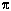

Voici l'index de notre dossier.
Toutes les notions-clés y sont référencées, chaque mot de l'index est en hypertexte : cliquez sur la référence et vous vous y rendrez aussitôt.
Symboles

1
13 1
1,618 1
64 1
7 1
9 1
A
abaques à
jetons 1
addition 1,
1, 1,
1
algèbre 1,
1, 1
algébrique 1,
1
algorismus 1
algorithme 1,
1
année lunaire 1
année solaire 1
Archimède 1
arithmétiques 1,1
Attila 1
B
babylonienne
1
base 1,
1, 1,
1
base cinq 1
base décimale 1
base dix 1,
1
base douze 1
base sexagésimale 1
base soixante 1
base vingt 1,
1, 1,
1
binaires 1
bouliers 1
bureaux du chiffre 1
C
C 1
calcul 1,
1, 1,
1
calcul décimal 1
calculateurs 1,
1
calculer 1
Calculi 1
calendrier 1
Came 1
caractère alphanumérique 1
caractères 1
caractères à lecture magnétique 1
Caractères optiques codés 1
cardinal 1,
1
carré 1
carré magique 1
carré magique parfait 1
cartes mécanographiques 1
centaine 1,
1, 1,
1, 1,
1
chiffres 1,
1, 1,
1, 1,
1, 1,
1, 1,
1, 1,
1,1,
1, 1,
1, 1,
1
chiffres « sacrés » 1
chiffres arabes 1
Chiffres hieroglyphiques 1
civilisation 1
CMC 7 1
codage 1
code 1,
1, 1
coefficients 1
combinaisons additives 1
communication 1
comptabilité 1,
1, 1
compter 1,
1, 1,
1, 1,
1, 1
cube 1
cunéiforme 1,
1
D
D 1
décimale 1,
1, 1,
1
décimaliser 1
décimaux 1
décrypteurs 1
dénominateur 1
dépôts de matière magnétique
1
divine proportion 1
division 1,
1
dizaine de mille 1
dizaines 1,
1, 1,
1, 1,
1
douzaine 1
E
écriture
1, 1,
1, 1,
1
écriture hiéroglyphique 1
énigmes 1
ensembles de nombre 1,
1
entiers 1
équation 1
équations du second degré 1
équations du premier degré 1
évolution 1
exposant 1
F
familles de
nombres 1
fractions 1
fractions communes 1
fractions décimales 1
fractions séxagésimales 1
G
gématrie
1
géométrie 1
géométrique 1,
1
ghubâr 1
glyphe 1
graphique 1
graphisme 1,
1
gubari 1
H
hiéroglyphes
1
hiéroglyphique 1
hindi 1,
1
I
impulsion
électrique 1
infini 1
information 1
K
kabbale 1
L
Le Corbusier
1
le temps 1
Les entiers naturels 1
les entiers relatifs 1
Les nombres complexes 1
Les nombres décimaux 1
les nombres rationnels 1
les nombres réels 1
ligne de fraction 1
lunaison 1
M
machine
1
machines à compter 1
mathématiciens 1,
1, 1
mathématiques 1,
1, 1
millier 1,
1, 1,
1
million 1
multiplication 1
myriades 1
mystères 1
N
N 1
nombre d'or 1
nombres 1,
1, 1,
1, 1,
1, 1,
1, 1,
1, 1,1,
1, 1,
1, 1,
1
nombres entiers 1
nombres négatifs 1
notation 1, 1, 1, 1, 1
notation indienne 1
notation numérique 1
numérateur 1
numération 1, 1, 1, 1, 1
numérations écrites 1
numérations orales 1, 1
numérologie 1
numérologues 1
numérotation 1
numérotation à base soixante 1
O
opération
1, 1
ordinateur 1,
1
ordinaux 1
oxyde de fer 1
P
papyrus
1
parties fractionnaires 1
perception 1
perforation 1
périmètre du cercle 1
point décimal 1
polices de caractères 1
positifs 1
problèmes 1
puissance 1
pythagoriciens 1
Q
R
R 1
racine 1
racine zéro 1
racines négatives 1
rectangle doré 1
représentation chiffrée 1
Représentations 1
rythme solaire 1
S
séxagésimales
1
Sifr 1
signe 1,
1, 1,
1, 1
signe graphique 1
signe numérique 1
signes de base 1
signes graphiques 1,
1
somme 1,
1
sommes de fractions 1
soustraction 1
spirale dorée 1
Sunya 1
symbole 1,
1,1,
1
symbole-étalon 1
symboles numériques 1
symboles originaux 1
symboliques 1
symbolisation 1,
1
symboliser les nombres 1
système 1,
1, 1
système de numération 1,
1, 1,
1, 1
T
table de multiplication
1
tables 1
tables d'illustration 1
tablette 1,
1, 1
tablettes d'argile 1
traduire 1
traduction 1
transformations algébriques 1
typographiques 1
U
unité
1, 1,
1, 1,
1, 1
unités du premier ordre décimal 1
unité du deuxième ordre 1
unités du troisième ordre décimal 1
unités du quatrième ordre décimal 1
unités du cinquième ordre décimal 1
unités numériques 1
V
valeur
1, 1,
1, 1
valeur numérique 1,
1, 1
valeurs approchées 1
valeurs numériques 1,
1
vigésimale 1
vingtaine 1
virgule 1
Y
Z
Z 1
zéfiro 1
zéfirum 1
zéro 1,
1, 1,
1, 1